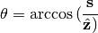
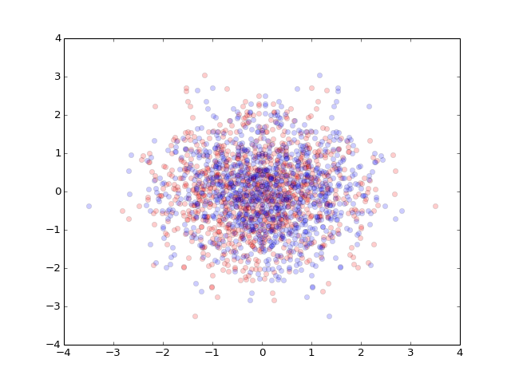

pylayers.util.geomutil module¶
- pylayers.util.geomutil.BTB_rx(a_g, T)[source]¶
Produce a set of rotation matrices for passage between global and local frame
Parameters: a_g : :
angle in global reference frame 2 x N : (theta,phi) x N
T : :
Rx rotation matrix 3 x 3
Returns: R : ndarray (3x3)
al : ndarray (r x 2)
angle expressed in local basis
See also
Notes
N is the number or rays
- pylayers.util.geomutil.BTB_tx(a_g, T)[source]¶
Produce a set of rotation matrices for passage between global and local frame
Parameters: a_g : :
angle in global reference frame 2 x N : (theta,phi) x N
T : :
Tx rotation matrix 3 x 3
- Centroid(p=array([[ 0, 10, 10, 0],
- [ 0, 0, -2, -2]]))
Determine the centroid of the polygon defined by a sequence of points in a plane
Parameters: p : np array polygon (2xNp) Returns: pc = Centroid() : References
http://en.wikipedia.org/wiki/Centroid
Examples
>>> from pylayers.util.geomutil import * >>> p = np.array([[0,10,10,0],[0,0,-2,-2]]) >>> pc = Centroid(p) >>> d = pc-np.array([5.,-1]) >>> md = np.dot(d,d) >>> assert(md<1e-15)
- class pylayers.util.geomutil.GeomVect(_filename='geomdef', clear=False)[source]¶
Bases: pylayers.util.geomutil.Geomview
Geomview VECT file class
- NPolylines NVertices NColors
- Nv[0] ... Nv[NPolylines-1] # number of vertices in each polyline
- Nc[0] ... Nc[NPolylines-1] # number of colors supplied in each polyline
- Vert[0] ... Vert[NVertices-1] # All the vertices (3*NVertices floats)
- Color[0] ... Color[NColors-1] # All the colors (4*NColors floats, RGBA)
VECT objects represent lists of polylines (strings of connected line segments, possibly closed).A degenerate polyline can be used to represent a point: A VECT file begins with the key word VECT or 4VECT and three integers:
- NLines, NVertices, and NColors.
- Here NLines is the number of polylines in the file, NVertices the total number of vertices, and NColors the number of colors as explained below. Next come NLines 16-bit integers
- Nv[0] Nv[1] Nv[2] ... Nv[NLines-1]
giving the number of vertices in each polyline. A negative number indicates a closed polyline; 1 denotes a single-pixel point. The sum (of absolute values) of the Nv[i] must equal NVertices. Next come NLines more 16-bit integers Nc[i]: the number of colors in each polyline. Normally one of three values:
- 0 : No color is specified for this polyline.
- It’s drawn in the same color as the previous polyline.
- 1 : A single color is specified.
- The entire polyline is drawn in that color.
- abs(Nv[i]) : Each vertex has a color.
- Either each segment is drawn in the corresponding color, or the colors are smoothly interpolated along the line segments, depending on the implementation.
- Next come NVertices groups of 3 or 4 floating-point numbers:
- the coordinates of all the vertices.
If the keyword is 4VECT then there are 4 values per vertex. The first abs(Nv[0]) of them form the first polyline,
the next abs(Nv[1]) form the second and so on.- Finally NColors groups of 4 floating-point numbers give red,
- green, blue and alpha (opacity) values.
The first Nc[0] of them apply to the first polyline, and so on.
Methods: geomBase :
display a frame
ellipse :
display an ellipse
points :
display a set of points
- GeomVect.geomBase(M, pt=array([ 0., 0., 0.]), col=array([[0, 0, 1],
- [0, 1, 0],
- [1, 0, 0]]), linewidth=3, scale=1)
- Construct a geomview vect file for vizualisation of a frame
- by default the geomview filename is base0.vect
Parameters: M : ndarray (3 x 3 )
[ v1, v2, v3 ]
pt : np.array
origin point (default (0,0,0))
col : :
color (3x3)
linewidth : :
linewidth (default 3)
- points(pt, colorname='blue')[source]¶
Geomview display a set of points with color
Parameters: pt :
sequence of points np.ndarray or dictionnary whose value is a tuple (x,y,z)
colorname :
a colorname from coldict keys
Examples
>>> import numpy as np >>> from pylayers.util.geomutil import * >>> import scipy as sp >>> pt1 = sp.rand(3,10) >>> pt2 = { 1:(0,0,0),2:(10,10,10),3:(0,10,0),4:(10,0,0)} >>> gv1 = GeomVect('test1') >>> gv1.points(pt1) >>> #gv1.show3() >>> gv2 = GeomVect('test2') >>> gv2.points(pt2) >>> #gv2.show3()
- class pylayers.util.geomutil.Geomoff(_filename='geomoff')[source]¶
Bases: pylayers.util.geomutil.Geomview
Notes
Class Geomview OFF File (Object File Format) [ST][C][N][4][n]OFF #header keyword [Ndim] # spac dimension of vertices, present only if nOFF NVertices NFaces NEdges
x[0],y[0] z[0]
# Vertices,possibly with normals #colors, and/or texture coordinates, in that order, if the # prefixes N , C , ST are present # If 4OFF , each vertex has 4 components # including a final homogeneous component # If nOFF, each vertex has Ndim components # If 4nOFF , each vertex has Ndim+1 components .... x[NVertices-1],y[NVertices-1],z[NVertices-1]
# Faces # Nv = # vertices on this face # v[0] ... v[Nv-1] : vertex indices # in range 0... NVertices -1
Nv v[0] v[1] ....v[Nv-1] colorspec
# colorspec continues past v[Nv-1] # to end-of-line may be 0 to 4 numbers # nothing default # integer : colormap index (read from the file cmap.fmap) # 3 or 4 integers RGB[A] values 0..255 #
- box(extrem=array([-1, 1, -1, 1, -3, 3]))[source]¶
create a box
Parameters: extrem : ndarray
(1x6) [xmin,xmax,ymin,ymax,zmin,zmax]
Examples
>>> geo = Geomoff('test') >>> geo.box()
- cylinder(r, l, nphi=20, nl=3, col=[1.0, 0.0, 1.0], alpha=0.1)[source]¶
create a cylinder
Parameters: r : radius
l : length
nphi : number of phi
nl : number of l
col : list [r,g,b]
alpha : transparency
- pattern(theta, phi, E, **kwargs)[source]¶
export antenna pattern in a geomview format
Parameters: theta : np.array (,Nt)
phi : np.array (,Np)
E : np.array complex (Nt,Np)
po : origin (1x3)
T : rotation matrix (3x3)
minr : radius of minimum
maxr : radius of maximum
ilog : True (log) False (linear)
Examples
>>> from pylayers.util.geomutil import * >>> import numpy as np >>> th = np.arange(0,np.pi,0.05) >>> ph = np.arange(0,2*np.pi,0.05) >>> E = 1.5*np.sin(th[:,np.newaxis])*np.cos(0*ph[np.newaxis,:]) >>> g = Geomoff('dipole') >>> g.pattern(th,ph,E) >>> g.show3()
- polygon(p, poly)[source]¶
create geomview off for polygon
Parameters: p : nparray
sequence of points
poly : list
point numbers (index starting in 0)
- class pylayers.util.geomutil.Geomview(_filename, clear=False)[source]¶
Bases: object
Geomview file class
This class is parent of GeomVect Geomlist Geomoff
Methods: show3 :
- class pylayers.util.geomutil.LineString(p)[source]¶
Bases: shapely.geometry.linestring.LineString
Overloaded shapely LineString class
- plot(**kwargs)[source]¶
plot LineString
Parameters: color : string
default #abcdef”
alpha : float
transparency (default 0.8)
fig : figure object
ax : axes object
Examples
>>> from pylayers.util.geomutil import * >>> import matplotlib.pyplot as plt >>> import numpy as np >>> l1 = np.array([[0,1,1,0],[0,0,1,1]]) >>> L1 = LineString(l1) >>> l2 = [[3,4,4,3],[1,1,2,2]] >>> L2 = LineString(l2) >>> fig,ax = L1.plot(color='red',alpha=0.3,linewidth=3) >>> fig,ax = L2.plot(fig=fig,ax=ax,color='blue',alpha=0.7,linewidth=2) >>> title = plt.title('test plotting LineString')
(Source code, png, hires.png, pdf)

{kind=link}
{kind=link}
- Lr2n(p=array([[ 0, 10, 10, 0],
- [ 0, 0, -2, -2]]), closed=True)
Linear Ring to normal
Parameters: p : np.array (2xN)
- closed : boolean
default True
Returns: n : np.array (2xN)
normal
p3 x——————x p2
Examples
>>> import shapely.geometry as shg >>> import matplotlib.pyplot as plt >>> import numpy as np >>> points1 = shg.MultiPoint([(0, 0), (0, 1), (1, 1), (1,0 )]) >>> points2 = shg.MultiPoint([(0, 0), (1, 0), (1, 1), (0,1 )]) >>> poly1 = shg.Polygon(points1) >>> poly2 = shg.Polygon(points2) >>> lring1 = poly1.exterior >>> lring2 = poly2.exterior >>> x1,y1 = lring1.xy >>> x2,y2 = lring2.xy >>> p1 = np.array([x1[0:-1],y1[0:-1]]) >>> p2 = np.array([x2[0:-1],y2[0:-1]]) >>> n1 = Lr2n(p1) >>> n2 = Lr2n(p2)
- pylayers.util.geomutil.MEulerAngle(alpha, beta, gamma)[source]¶
Calculate a rotation matrix from 3 Euler angles
Parameters: alpha : float
rotation along axis z
beta : float
rotation along axis x
gamma : float
rotation along axis y
Returns: T : np.array (3x3)
rotation matrix
Warning
Bizarre I was expected
-1 0 0 0 0 1 0 1 0 Examples
>>> import numpy as np >>> T=MEulerAngle(np.pi/2,np.pi/2,np.pi/2)
- pylayers.util.geomutil.MRot3(a, axe)[source]¶
Return a 3D rotation matrix along axe 0|1|2
Parameters: a : angle (radians)
axe : 0:x 1:y 2:z
- class pylayers.util.geomutil.Plot_shapely(obj, ax, coul=None, alph=1)[source]¶
Bases: object
draw Shapely with matplotlib - pylab Plot_shapely.py Author : Martin Laloux 2010
- class pylayers.util.geomutil.Polygon(p=[[3, 4, 4, 3], [1, 1, 2, 2]], vnodes=[])[source]¶
Bases: shapely.geometry.polygon.Polygon
Overloaded shapely Polygon class
Methods: plot :
ptconvex :
buildGv :
ndarray : :
get a ndarray from a Polygon
signedarea : :
get the signed area of the polygon
- buildGv(**kwargs)[source]¶
Create visibility graph for a polygon
Parameters: display : boolean
default : False
fig : matplotlib.figure.pyplot
ax : axes
udeg1 : np.array indexes of points of degree 1
default = []
udeg2 : np.array indexes of points of degree 2
default = []
See also
Notes
Segment k and (k+1)%N share segment (k+1)%N The degree of a point is dependent from other polygons around
Topological error can be raised if the point coordinates accuracy is not limited.
Nodes of polygon are numbered in the global graph in vnodes member.
Examples
>>> from pylayers.util.geomutil import * >>> import shapely.geometry as shg >>> import matplotlib.pyplot as plt >>> points = shg.MultiPoint([(0, 0), (0, 1), (2.5,1), (2.5, 2), (2.8,2), (2.8, 1.1), (3.2, 1.1), (3.2, 0.7), (0.4, 0.7), (0.4, 0)]) >>> polyg = Polygon(points) >>> Gv = polyg.buildGv(show=True) >>> plt.axis('off') (-0.5, 4.0, -0.5, 2.5) >>> title = plt.title('Testing buildGv')
(Source code, png, hires.png, pdf)

- ndarray()[source]¶
get a ndarray from a Polygon
Returns: p : ndarray (2xNp) Examples
>>> from pylayers.util.geomutil import * >>> p1 = np.array([[0,1,1,0],[0,0,1,1]]) >>> P1 = Polygon(p1)
- plot(**kwargs)[source]¶
plot function
Parameters: color : string
default #abcdef”
alpha : float
transparency (default 0.8)
Examples
>>> from pylayers.util.geomutil import * >>> import matplotlib.pyplot as plt >>> import numpy as np >>> p1 = np.array([[0,1,1,0],[0,0,1,1]]) >>> P1 = Polygon(p1) >>> p2 = [[3,4,4,3],[1,1,2,2]] >>> P2 = Polygon(p2) >>> p3 = [np.array([10,10]),np.array([11,10]),np.array([11,11]),np.array([10,11])] >>> P3 = Polygon(p3) >>> fig,ax = P1.plot(color='red',alpha=0.3) >>> fig,ax = P2.plot(fig=fig,ax=ax,color='blue',alpha=0.7) >>> fig,ax = P3.plot(fig=fig,ax=ax,color='green',alpha=1) >>> title = plt.title('test plotting polygons')
(Source code, png, hires.png, pdf)

- ptconvex(display=False)[source]¶
Return a list of booleans indicating points convexity
Parameters: display : boolean
default False
Returns: tcc : np.array (1x Nseg)
1 if convex , -1 if concav , 0 if plane
n : array(2xNseg)
segments normals
See also
Lr2n
Notes
This function determines the convex and concav points of a polygon. As there is no orientation convention for the polygon the sign of the cross product can’t be directly interpreted. So we exploit the following property :
Let N be the number of points of the Polygon. N = Nx + Nc where Nx is the number of convex points and Nc the number of concav points
We have Nx >= Nc
If a point is common to two parallel segments, the cross product is = 0
Examples
>>> from pylayers.util.geomutil import * >>> import shapely.geometry as shg >>> import matplotlib.pyplot as plt >>> points = shg.MultiPoint([(0, 0), (0, 1), (3.2, 1), (3.2, 0.7), (0.4, 0.7), (0.4, 0)]) >>> N = len(points) >>> polyg = Polygon(points) >>> tcc,n = polyg.ptconvex() >>> #k = 0 >>> #for p in points: >>> # if tcc[k] == 1 : >>> # plt.plot(p.x, p.y, 'o', color='red',alpha=1) >>> # else: >>> # plt.plot(p.x, p.y, 'o', color='blue',alpha=0.3) >>> # k = k+1 >>> #polyg.plot() >>> #plt.figure() >>> #points = shg.MultiPoint([(0, 0), (1, 1), (2, 0), (1, 0)]) >>> #poly = Polygon(points) >>> #tcc,n = polyg.ptconvex() >>> #poly.plot()
{kind=link}
{kind=link}
{kind=link}
{kind=link}
- SignedArea(p=array([[ 0, 10, 10, 0],
- [ 0, 0, -2, -2]]))
Calculate the signed area of a sequence of points in a plane
Parameters: p : array 2 x Np Examples
>>> from pylayers.util.geomutil import * >>> p = np.array([[0,10,10,0],[0,0,-2,-2]]) >>> A = SignedArea(p) >>> assert(A+20<1e-15)
- pylayers.util.geomutil.SphericalBasis(a)[source]¶
SphericalBasis(a):
a[:,0] : N x theta theta angle a[:,1] : N x phi phi angle
M = N x [th,ph,s] : 3 x 3 x N
- pylayers.util.geomutil.affine(X, Y)[source]¶
find affine transformation
Parameters: X : np.array
3xN
Y :
3xN
Returns: A : np.array
3x3
B : np.array
3x1
Notes
Given X and Y find the affine transformation
Y = A X + B
- pylayers.util.geomutil.angledir(s)[source]¶
evaluate (theta,phi) from direction vector
Parameters: s : ndarray N x 3
N direction vector
Returns: a : ndarray 2xN
N angle (theta,phi)
See also
BTB_Rx, BTB_Tx
Notes

- pylayers.util.geomutil.angular(p1, p2)[source]¶
determine angle between p1 and p2 in [0 2pi]
Parameters: p1 :
point p1
p2 :
point p2
Notes
weird the origin is p2
Examples
>>> import numpy as np >>> p1 = np.array([0,0]) >>> p21 = np.array([1,0]) >>> p22 = np.array([1,1]) >>> p23 = np.array([0,1]) >>> p24 = np.array([-1,1]) >>> p25 = np.array([-1,0]) >>> p26 = np.array([-1,-1]) >>> p27 = np.array([0,-1]) >>> p28 = np.array([1,-1]) >>> a1 = angular(p21,p1) >>> a2 = angular(p22,p1) >>> a3 = angular(p23,p1) >>> a4 = angular(p24,p1) >>> a5 = angular(p25,p1) >>> a6 = angular(p26,p1) >>> a7 = angular(p27,p1) >>> a8 = angular(p28,p1)
- pylayers.util.geomutil.ccw(a, b, c)[source]¶
counter clock wise order
Parameters: a : ndarray (2,N)
b : ndarray (2,N)
c : ndarray (2,N)
Returns: array of booleans :
References
Examples
>>> import scipy as sp >>> a = sp.rand(2,100) >>> b = sp.rand(2,100) >>> c = sp.rand(2,100) >>> u = ccw(a,b,c)
- pylayers.util.geomutil.cylmap(Y, r=0.0625, l=0.5)[source]¶
find affine transformation for a specific cylinder
Parameters: Y :
3xN
Returns: A : np.array
3x3
B : np.array
3x1
Notes
Y = A X + B
- pylayers.util.geomutil.dist(x, y, ax)[source]¶
calculates distance between two arrays along a given axis Parameters ———-
x : numpy.ndarray y : numpy.ndarray ax : integer (0,1)Returns: d : numpy.ndarray Examples
>>> import numpy as np >>> x = np.array([[0., 0., 10., 10.],[0., 10., 10., 0.]]) >>> y = np.array([[5.],[5.]]) >>> ax = 0 >>> d = dist(x,y,ax)
- pylayers.util.geomutil.distseg(a, b, c, d, alpha, beta)[source]¶
distance to segments
Parameters: a : (3xN) initial point segment 1
b : (3xN) end point segment 1
c : (3xN) starting point segment 2
d : (3xN) end point segment 2
alpha : :
beta : :
Returns: f : square of the distance to the segment
Examples
>>> import numpy as np >>> np.random.seed(0) >>> a = np.random.rand(3,10) >>> b = np.random.rand(3,10) >>> c = np.random.rand(3,10) >>> d = np.random.rand(3,10) >>> alpha,beta,dmin = dmin3d(a,b,c,d) >>> alpha[alpha<0]=0 >>> alpha[alpha>1]=1 >>> beta[beta<0]=0 >>> beta[beta>1]=1 >>> f = distseg(a,b,c,d,alpha,beta) >>> p1 = a - alpha*(a-b) >>> p2 = c + beta*(d-c) >>> v = p1-p2 >>> g = np.sum(v*v,axis=0) >>> diff = np.sum(f-g,axis=0) >>> np.testing.assert_almost_equal(diff,0)
- pylayers.util.geomutil.dmin3d(a, b, c, d)[source]¶
evaluate the minimal distance between 2 set of segments
Parameters: a : (3xN) initial point segment 1
b : (3xN) end point segment 1
c : (3xN) starting point segment 2
d : (3xN) end point segment 2
Returns: alpha : segment parameterization
beta : segment parameterization
dmin : minimal distance between 2 segments
- pylayers.util.geomutil.dptseg(p, pt, ph)[source]¶
distance between a set of points and a segment
Parameters: ps : ndim x Np
array of Np points
pt : ndim x 1
tail coordinates of segment
ph : ndim x 1
head coordinates of segment
Returns: d1 : 1 x Np
distance between pt and ortho projection of ps
d2 : 1 x Np
distance between ph and ortho projection of ps
h : distance between ps and ortho projection of ps
Examples
- pylayers.util.geomutil.ellipse(fd, p, vth, vph, Eth, Eph, N)[source]¶
build a geomview file of an ellipse
Parameters: fd : file descriptor
p : ellipse center
vth : unitary vector along theta
vph : unitary vector along phi
Eth : complex
Eph : complex
N : descretization step
- pylayers.util.geomutil.intersect(a, b, c, d)[source]¶
check if segment AB intersects segment CD
Parameters: a : np.array (2xN)
b : np.array (2xN)
c : np.array (2xN)
d : np.array (2xN)
See also
- ccw
- counter clock wise detection
Examples
>>> import scipy as sp >>> import numpy as np >>> from pylayers.util.geomutil import * >>> from pylayers.util.plotutil import * >>> import matplotlib.pylab as plt >>> N = 10 >>> A = sp.rand(2,N) >>> B = sp.rand(2,N) >>> C = sp.rand(2,N) >>> D = sp.rand(2,N) >>> b1 = intersect(A,B,C,D) >>> pt1 = A[:,b1] >>> ph1 = B[:,b1] >>> pt2 = C[:,b1] >>> ph2 = D[:,b1] >>> f1,a1 = displot(pt1,ph1,'r') >>> f2,a2 = displot(pt2,ph2,'b') >>> ti = plt.title('test intersect') >>> A = np.array([[0],[0]]) >>> B = np.array([[1],[1]]) >>> C = np.array([[1],[0]]) >>> D = np.array([[0],[1]]) >>> intersect(A,B,C,D) array([ True], dtype=bool) >>> intersect(A,B,C,D)[0] True
(Source code, png, hires.png, pdf)

{kind=link}
{kind=link}
- pylayers.util.geomutil.isBetween(p1, p2, p, epsilon=1e-05)[source]¶
test if p is between p1 and p2
Parameters: p1 : np.array
p2 : np.array
p : np.array
epsilon : float
tolerance default 1e-5
Returns: boolean :
Examples
>>> p1 = np.array([0,0]) >>> p2 = np.array([2,0]) >>> p = np.array([1,0]) >>> assert(isBetween(p1,p2,p)),'error'
- pylayers.util.geomutil.isleft(a, b, c)[source]¶
Test point c is at left of the vector a–>b
Parameters: a : np.array (2xN)
b : np.array (2xN)
c : np.array (2xN)
Returns: boolean array (1xN) :
See also
Examples
>>> from pylayers.util.plotutil import * >>> import scipy as sp >>> import numpy as np >>> from pylayers.util.geomutil import * >>> from pylayers.util.plotutil import * >>> import matplotlib.pylab as plot >>> N = 20 >>> A = sp.rand(2,N) >>> B = sp.rand(2,N) >>> C = np.array(([0.5,0.5])).reshape(2,1) >>> left=isleft(A,B,C) >>> il = np.where(left)[0] >>> inl = np.where(~left)[0] >>> plt.scatter(C[0],C[1],color='b',s=10) >>> displot(A[:,il],B[:,il],arrow=True,color='g') >>> displot(A[:,inl],B[:,inl],arrow=True,color='r')
(Source code, png, hires.png, pdf)

{kind=link}
{kind=link}
- pylayers.util.geomutil.line_intersection(l1, l2)[source]¶
intersection between two 2D lines using shapely
Parameters: l1: numpy.ndarray :
coordinates of l1 points
- l2: numpy.ndarray
coordinates of l2 points
Returns :
——- :
- p: numpy.ndarray
coordinates of intersection point
- pylayers.util.geomutil.linepoly_intersection(l, poly)[source]¶
intersection between a 2D line and a 2D polygon using shapely Parameters ———-
- l: numpy.ndarray
- coordinates of l points
- poly: numpy.ndarray
- coordinates of poly points
- p: numpy.ndarray
- coordinates of intersection point
- pylayers.util.geomutil.linet(ax, p1, p2, al=0.9, color='blue', linewidth=1)[source]¶
draw a short line segment
Parameters: ax : axes
p1 : np.array
start point
p2 : np.array
end point
al : float
0 < al < 1 percentage of drawing default 0.9
color : string
color default ‘blue’
linewidth : float
line width default 1
Returns: ax : Axes instance
Examples
>>> from pylayers.util.geomutil import * >>> import matplotlib.pyplot as plt >>> fig = plt.figure() >>> ax = fig.gca() >>> p1 = np.array([0,0]) >>> p2 = np.array([1,0]) >>> p3 = np.array([0,1]) >>> p4 = np.array([1,1]) >>> ax = linet(ax,p1,p2,al=0.7,color='red',linewidth=3) >>> ax = linet(ax,p2,p3,al=0.8,color='blue',linewidth=2) >>> ax = linet(ax,p3,p4,al=0.9,color='green',linewidth=1) >>> ax = linet(ax,p4,p1,al=1,color='cyan',linewidth=0.2)
(Source code, png, hires.png, pdf)

{kind=link}
{kind=link}
- pylayers.util.geomutil.mirror(p, pa, pb)[source]¶
Compute the image of p wrt the segment pa pb
Parameters: p : numpy.ndarray
point to image
pa : numpy.ndarray
segment tail
pb : numpy.ndarray
segment head
Returns: M : numpy.ndarray
Examples
>>> from pylayers.util.geomutil import * >>> from pylayers.util.plotutil import * >>> import matplotlib.pyplot as plt >>> import numpy as np >>> p = np.random.randn(2,1000) >>> pa = np.array([0,0]) >>> pb = np.array([0,1]) >>> M = mirror(p,pa,pb) >>> plt.plot(p[0,:],p[1,:],'or',alpha=0.2) >>> plt.plot(M[0,:],M[1,:],'ob',alpha=0.2)
(Source code, png, hires.png, pdf)

{kind=link}
{kind=link}
- pylayers.util.geomutil.mul3(A, B)[source]¶
matrix multiplication
Parameters: A : :
B : :
Returns: C : A*B
- pylayers.util.geomutil.normalize(vec)[source]¶
normalize an array of N ndim vectors
Parameters: vec : ndarray (N x ndim)
N ndim vectors
Returns: vecn : ndarray (N x ndim)
N normalized ndim vectors
- pylayers.util.geomutil.onb(A, B, v)[source]¶
orthonormal basis from 2 points defining an axe and a vector
Parameters: A : np.array
3 x n
B : np.array
3 x n
v : np.array
3 x n
Returns: T basis (un,vn,wn) :
3 x n x 3
(un,vn) is a basis in the plane transverse to the axis vn :
wn is the unitary vector along vector AB :
See also
pylayers.util.geomutil.Geomvect.geomBase, pylayers.util.mobility.body
Examples
>>> A = np.array([[0,0,0,0],[1,2,3,4],[0,0,0,0]]) >>> B = np.array([[0,0,0,0],[1,2,3,4],[10,10,10,10]]) >>> v = np.array([[1,1,1,1],[0,0,0,0],[0,0,0,0]]) >>> onb(A,B,v) array([[[ 1., 0., 0.], [ 0., 1., 0.], [ 0., 0., 1.]] [[ 1., 0., 0.], [ 0., 1., 0.], [ 0., 0., 1.]], [[ 1., 0., 0.], [ 0., 1., 0.], [ 0., 0., 1.]], [[ 1., 0., 0.], [ 0., 1., 0.], [ 0., 0., 1.]]])
- pylayers.util.geomutil.plotPolygon(poly, color='#abcdef', alpha=0.8)[source]¶
plot a shapely Polygon
Parameters: poly : shapely poligon
color : defauld #abcdef”
alpha : float
transparency (default 0.8)
- pylayers.util.geomutil.plot_bounds(ax, ob, color='#000000')[source]¶
Parameters: ax : matplotlib axes
ob : shapely object
color : string
default ‘#999999’
References
- pylayers.util.geomutil.plot_coords(ax, ob, color='#999999')[source]¶
plotting coord of a shapely object
Parameters: ax : matplotlib axes
ob : shapely object
color : string
default ‘#999999’
References
- pylayers.util.geomutil.plot_coords2(ax, ob)[source]¶
plot point from coordinates References ———- http://pypi.python.org/pypi/Shapely
- pylayers.util.geomutil.plot_line(ax, ob, color='#999999')[source]¶
Parameters: ax : matplotlib axes
ob : shapely object
color : string
default ‘#999999’
Notes
color = v_color(ob)
References
Examples
>>> from pylayers.util.geomutil import * >>> import matplotlib.pyplot as plt >>> seg = shg.LineString([(0,0),(1,1)]) >>> fig = plt.figure() >>> ax = fig.gca() >>> plot_line(ax,seg) >>> plt.show()
- pylayers.util.geomutil.ptonseg(pta, phe, pt)[source]¶
return a point on the segment (pta,pte)
Parameters: pta : ndarray
phe : ndarray
pt : ndarray
Returns: p : ndarray
- pylayers.util.geomutil.pvec(v1, v2)[source]¶
cross product between v1 and v2
Parameters: v1 : numpy array
v2 : numpy array
Returns :
——- :
v3 = v1 x v2 :
See also
np.cross
Examples
>>> v1 = np.array([1,0,0]) >>> v2 = np.array([0,1,0]) >>> v3 = pvec(v1,v2)
- pylayers.util.geomutil.pvecn(v1, v2)[source]¶
cross product and normalization
Parameters: v1 : numpy array
v2 : numpy array
Returns: v3 = v1 x v2 / | v1 x v2 | :
Examples
>>> v1 = np.array([2,0,0]) >>> v2 = np.array([0,2,0]) >>> v3 = pvecn(v1,v2)
- pylayers.util.geomutil.sector(p1, p2, pt)[source]¶
angular sector p1 pt p2
Parameters: p1 : np.array
point
p2 : np.array
point
pt : np.array
point
Notes
Useful for AAS calculation
- pylayers.util.geomutil.shrinkPolygon(poly, d=0.1)[source]¶
shrink polygon
Parameters: poly : shapely polygon
d : float
0.1
Returns: poly :
- pylayers.util.geomutil.simplifyPolygon(poly1)[source]¶
Simplify polygon : suppress adjacent colinear segments Parameters ———- poly1
- pylayers.util.geomutil.valid_wedge(ps, pw, p1, p2, grazing)[source]¶
check set of N wedge sector validity for point ps
Parameters: ps : source point
pw : np.array (Nx2) wedge apex point p1 : np.array (Nx2) point 1 of wedge p2 : np.array (Nx2) point 2 of wedge grazing : 0 (without grazing)
1 (authorize grazing)
xps
x pw
/ / / x p1 x p2
Returns: valid : np.array (Nx1)
valid = 1 if ps is in the convex sector valid = 0 if ps is in the concav sector
Examples
>>> p1 = np.array([-2,-2]).reshape(1,2) >>> p2 = np.array([2,-2]).reshape(1,2) >>> pw = np.array([0,0]).reshape(1,2) >>> ps1 = np.array([3,3]).reshape(1,2) >>> ps2 = np.array([0,-3]).reshape(1,2) >>> valid_wedge(ps1,pw,p1,p2,0)[0][0] 1.0 >>> valid_wedge(ps2,pw,p1,p2,0)[0][0] 1.0
- pylayers.util.geomutil.vec_sph(th, ph)[source]¶
return Spherical orthonormal frame
- [ [ eth]
- [ eph] (theta,phi) [ er ] ]
- pylayers.util.geomutil.wall_delta(x1, y1, x2, y2, delta=0.0001)[source]¶
Identification of new points
After defining a tolerance length those points which are situated in the extremities of the walls at a distance equivalent to the tolerance length are identified.
Parameters: x1 : float
The x component of the point of the first extremity
y1 : float
The x component of the point of the first extremity
x2 : float
The x component of the point of the second extremity
y2 : float
The x component of the point of the second extremity.
Returns: bx : float
The x component of the new point of the first extremity
by : float
The y component of the new point of the first extremity
cx : float
The x component of the new point of the second extremity
cy : float
The y component of the new point of the second extremity.
Notes

Examples
>>> x1=-2. >>> y1=2. >>> x2=-1. >>> y2=1. >>> bx,by,cx,cy = wall_delta(x1,y1,x2,y2,delta=0.0001) >>> assert bx==-1.9999292893218814,'Mistake' >>> assert by==1.9999292893218814,'Mistake' >>> assert cx==-1.0000707106781186,'Mistake' >>> assert cy==1.0000707106781186,'Mistake'